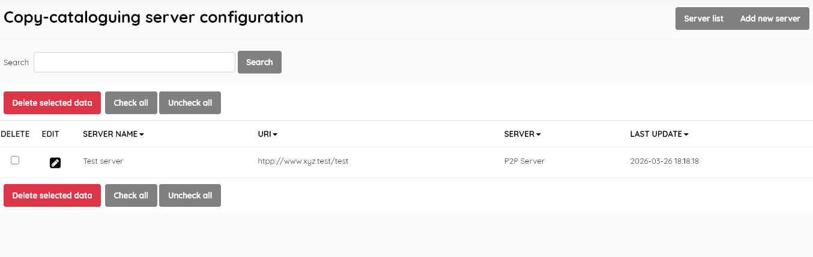
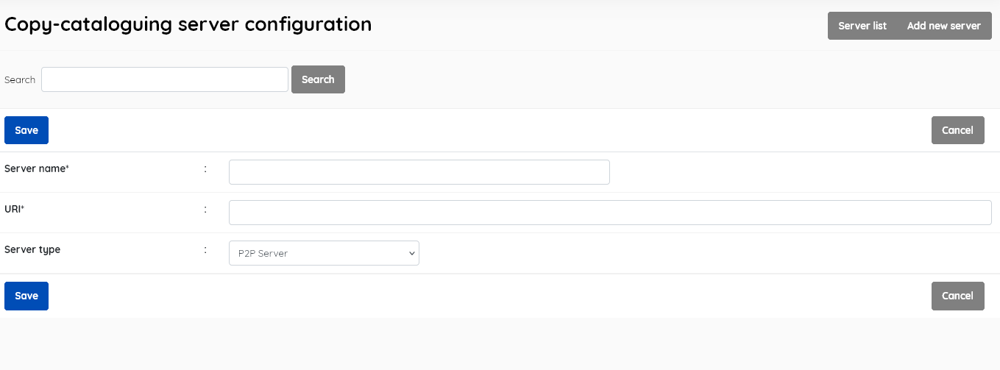

While SLiMS comes with a default setting for MARC SRU [ https://opac.perpusnas.go.id/sru.aspx] , and Z39.50 SRU [http://z3950.loc.gov:7090/voyager] , and the default P2P pointing at itself, provision is also made for setting up connections to other catalogue servers.
Server list
Displays the list of user servers, with data for:
Server name (user-friendly name chosen by librarian)
URI ( holds the address of the server )
Server ( the server type: P2P, Z3950 , Z3950 SRU, MARC SRU)
Last Update

This section is provided with facilities to DELETE and EDIT server data.
To edit an item , double-click on the server name , or single-click on the pencil (edit) icon.
A search function allows you to search for entries by keywords.
Results can be sorted by clicking on the field name at the top of each column.
This provides the facility to add new cataloguing servers directly to the Senayan system.

Complete each field, choosing the server type from the drop-down list, then click the SAVE button.
Once a server has been added, it will be available in the appropriate copy-cataloguing method, as an item in the dropdown list to choose which server to use.